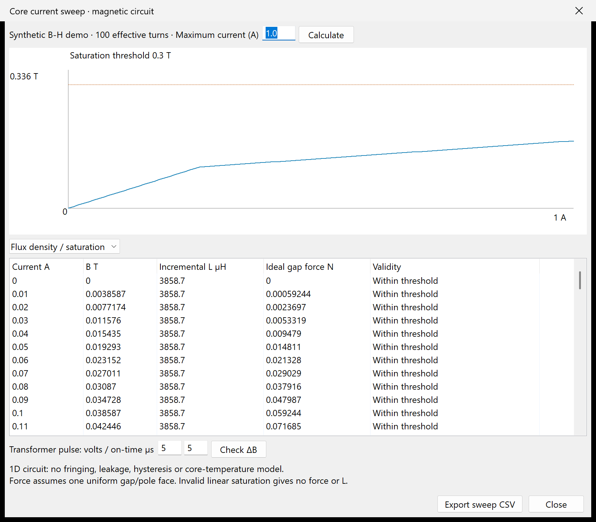
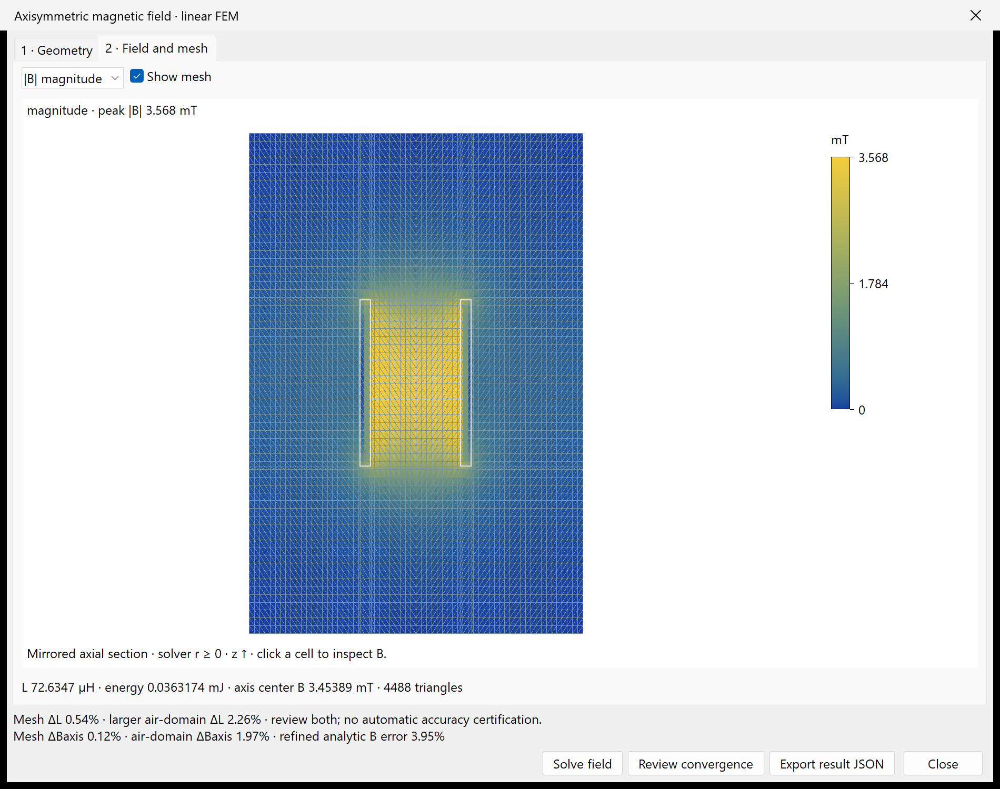
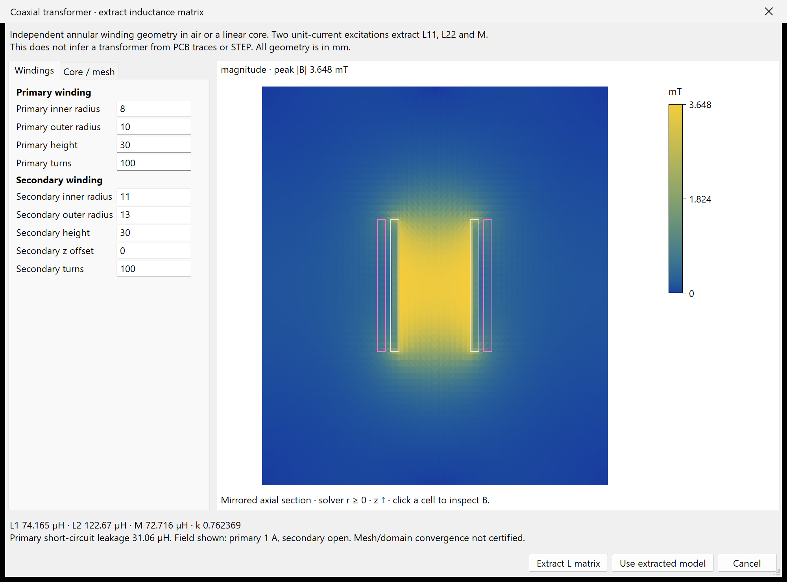
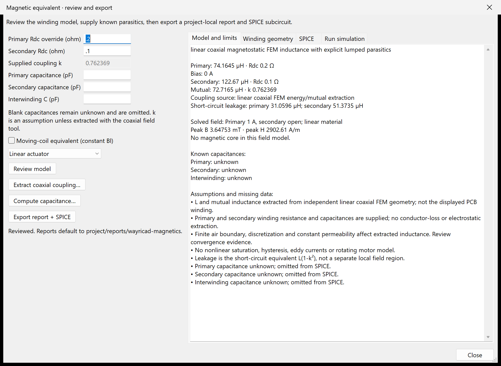
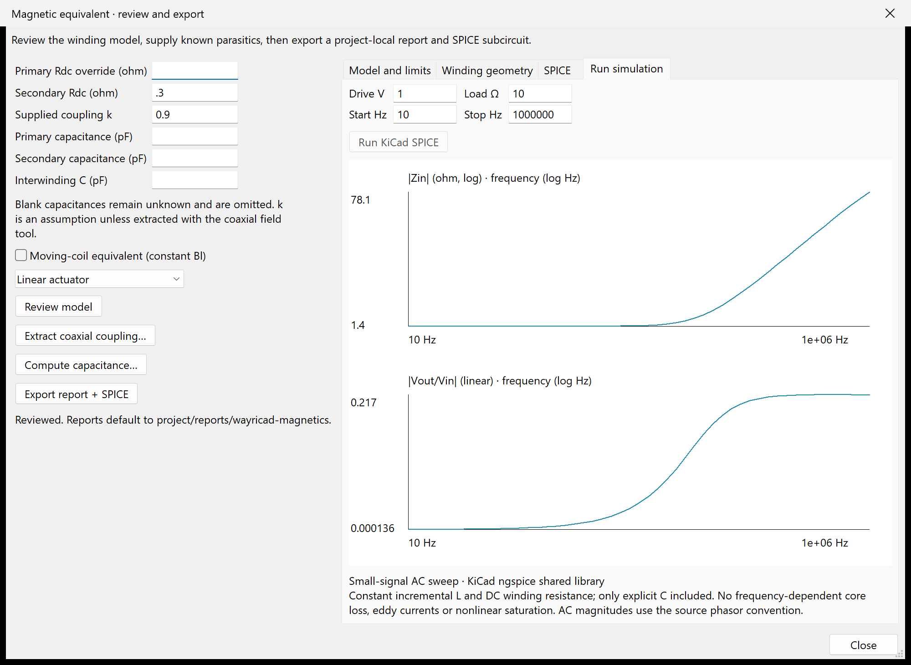
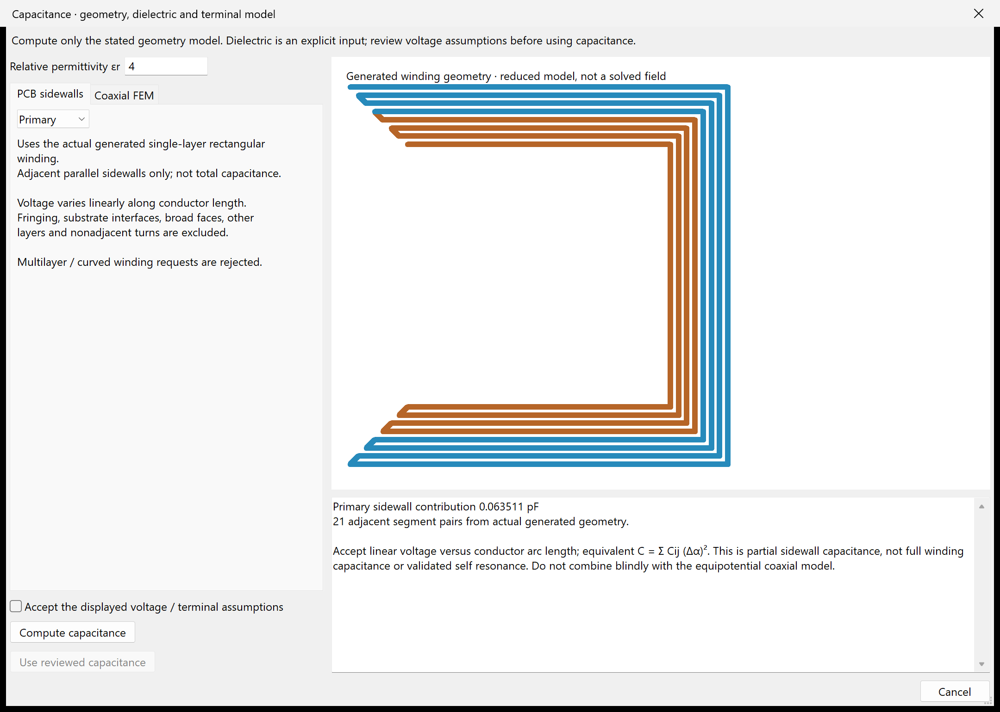
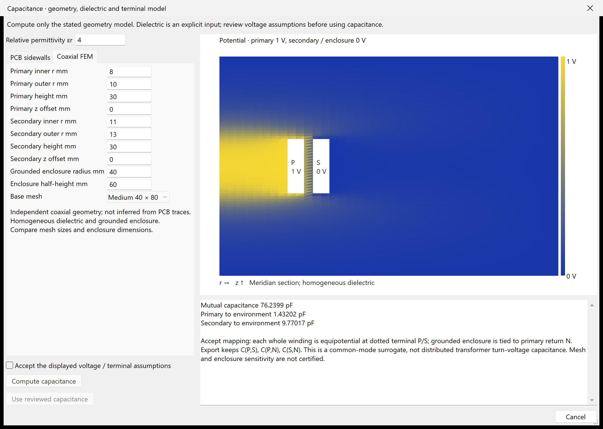
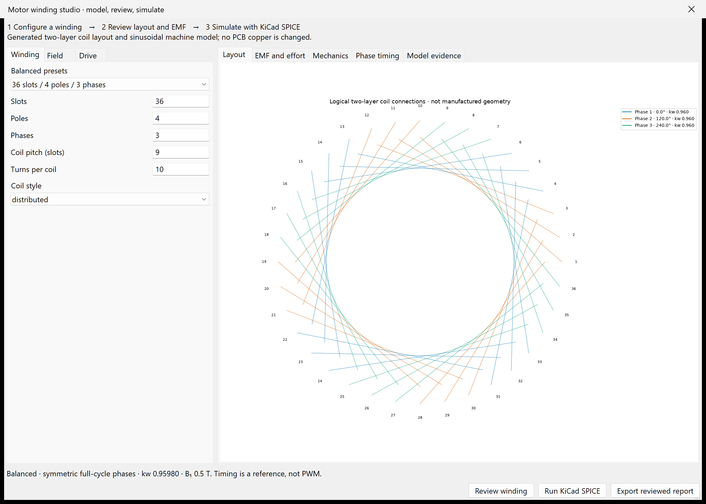
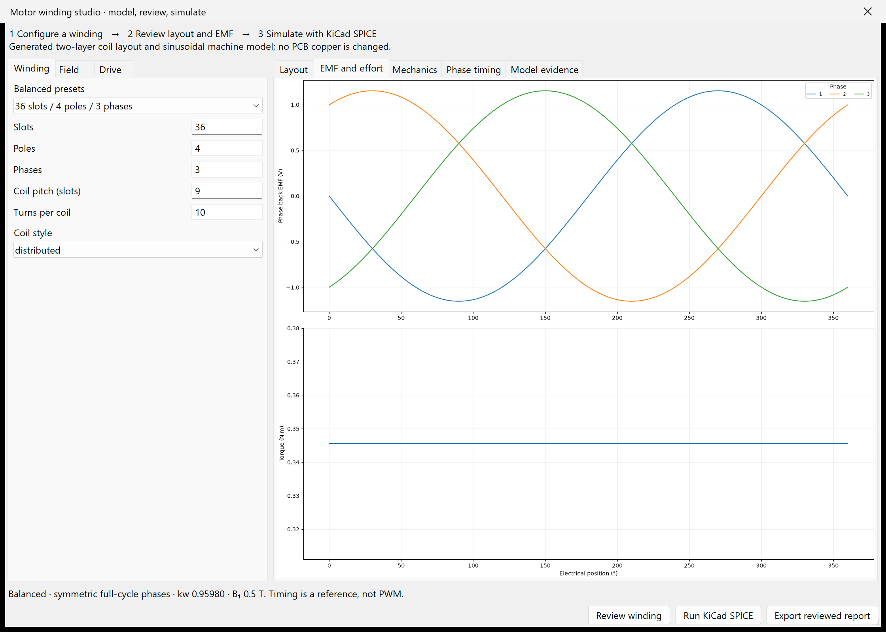
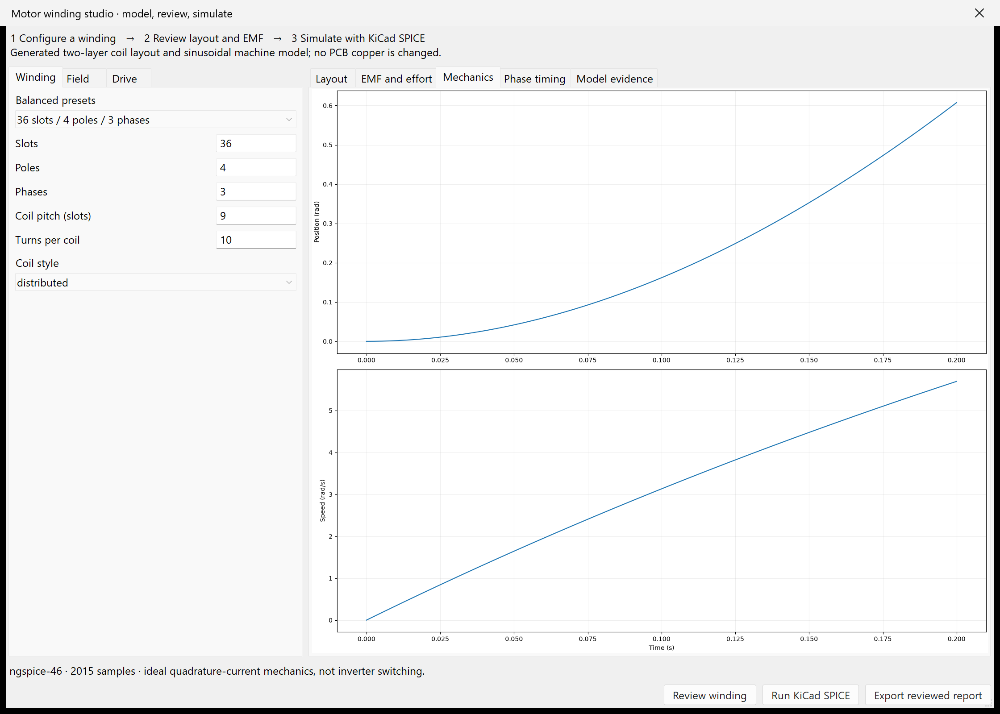

| Input | Meaning |
|---|---|
| Moving mass / rotor inertia | Effective modal mass or rotary inertia, not necessarily total physical mass. |
| Spring / angular stiffness | Linearized restoring stiffness around the operating point. |
| Mechanical Q or damping | Enter damping directly, or leave zero to derive it from Q. |
| Gap and travel limit | Initial magnetic gap and hard position clamp. Contact bounce is not modeled. |
| Load and stiction | Constant opposing load and a simple breakaway-force threshold. |
| Drive | Voltage/current step or sine waveform. Voltage drive includes coil L/R and back EMF. |
The electrical state uses L di/dt = V - Ri - Ke v. Linear motion uses
m x'' + c x' + kx = Fmag - Fload - Ffriction; rotary motion uses the
inertia/torque equivalent. Solenoid force is based on
F = 0.5 i^2 dL/dx with a variable air-gap reluctance and saturation
clamp. Voice-coil force uses a local B l i model with gap roll-off.
The RK4 integrator automatically tightens the requested step against electrical
and mechanical time constants and limits runs to 200,000 internal steps.
Mechanical resonance is sqrt(k/m)/(2 pi). Thermal force-noise
density uses sqrt(4 kB T c), and equilibrium Brownian displacement
uses sqrt(kB T/k). These are lumped, linear, equilibrium estimates.
The four-lane plot shows position, speed, acceleration, and force or torque against time. Each lane is independently normalized and labeled with its peak; compare values in the results table rather than comparing lane heights. Export Motion CSV writes every displayed sample with SI units. Animation follows the simulated trajectory but visually amplifies very small travel.
For MEMS/NEMS work, replace every default with process-specific measured values, solve coupled electromagnetic, structural, thermal, and fluid domains, perform mesh and timestep convergence studies, include uncertainty/Monte Carlo analysis, and correlate against fabricated test structures.
The one-mode mass/spring/damping structure and thermal-noise treatment follow standard nanomechanical resonator practice. See the NIST cantilever control and noise treatment and peer-reviewed nanomechanical force-sensitivity literature: NIST cantilever modeling, diamond nanomechanical resonators, and thermal-noise-driven resonators.
Open Winding and Core → Core tools. Edit effective area (mm²), path length and total air gap (mm), permeability and saturation threshold (T). Optional B-H samples use B in T and H in A/m, beginning at 0,0. Both columns must increase; there is no extrapolation.
Current / saturation sweep plots B, incremental L or ideal gap force. The transformer pulse check computes ΔB = V ton / (N Ae); include initial/reset flux separately. Export the core catalogue to preserve custom materials and export CSV for sweep samples.

The screenshot uses explicitly synthetic material samples. A linear model above saturation reports unavailable force and inductance. A B-H curve is static/anhysteretic; it does not predict hysteresis loss. Nonlinear B-H cores cannot run the older coupled-motion solver.
Inspect STEP core imports valid closed solids through an optional FreeCAD Python process and displays their wireframe, bounds and volume. Set WAYRICAD_MAGNETICS_FREECAD_PYTHON if FreeCAD is not discovered. The PCB and source STEP are unchanged. Outside dimensions are not Ae/le; enter the magnetic path, area, gap and material explicitly.
This is a surface preview and 1D magnetic circuit, not a field mesh or full FEA. Fringing, leakage maps, hysteresis, temperature-dependent saturation and detailed transformer/actuator FEA remain outside the model. Zero custom core-loss coefficient means uncharacterized loss. Read the equations and solver integration status.
Core tools → Axisymmetric field opens Geometry and Field/mesh stages. Define winding radii, height, turns and current; optional linear core and mesh controls are collapsed. This independent cylindrical model is not automatically derived from PCB or STEP geometry.
Solve field computes triangular Aφ finite elements with Aφ=0 at the axis and finite external boundary. Inspect |B|, Br, Bz, mesh and cell values. Review convergence compares twice the mesh density and a 25% larger air domain; air cases also compare the finite-solenoid analytical axis field. Export JSON preserves the mesh, fields, energy, inductance and residual evidence.

This is a linear magnetostatic subset. Nonlinear saturation, hysteresis, eddy currents, arbitrary STEP/planar winding field solves, arbitrary multiwinding geometry and Maxwell-stress force remain unsupported. Compare peak core B with the real material limit. The separate circuit sweep offers static B-H behavior; it is not a nonlinear field solution.
After Preview, open More → Equivalent model & report. Review incremental L, Rdc, B/H and supplied-path reluctance. Blank capacitances remain unknown. Transformer SPICE requires explicit secondary Rdc. Supplied coupling k is an assumption; leakage is the short-circuit equivalent L(1−k²).
Extract coaxial coupling defines two independent annular winding volumes and an optional linear core. Two unit-current FEM solutions produce the reciprocal inductance matrix, mutual M, k and leakage. Windings and core/mesh inputs have separate tabs. Inspect the solved B field, quantitative scale and click for B/H. Primary excitation is 1 A with secondary open. This geometry is independent of the PCB winding, so enter both winding resistances before export.

Positive-definite L and |k|<1 are required. Mesh and finite-air-boundary errors remain; no capacitance, conductor loss, eddy current or nonlinear material extraction is claimed. See the local model notes for equations and limits.

Export report + SPICE writes a unique folder in PROJECT/reports/wayricad-magnetics/: HTML, JSON, SPICE and, for FEM, full field JSON. The local HTML includes the equivalent circuit, field image, assumptions and saved-board context. Save the board first; reopen review if the saved board changes. No PCB or prior export is overwritten.
Enable the mechanical equivalent for a linear actuator or explicit-parameter DC motor. Enter constant reciprocal Bl or Kt=Ke, mass or rotor inertia, damping and optional spring. SPICE exposes speed as VEL (m/s) or OMEGA (rad/s). These are small-signal lumped models with supplied mechanical constants, not a rotating-field or BLDC simulation. Unknown capacitance is omitted; explicit interwinding capacitance connects the dotted terminals.
In equivalent-model review, open Run simulation. Choose drive voltage and transformer load, then run a bounded AC sweep. Input impedance and gain/phase come from the actual KiCad-bundled ngspice engine in an isolated process. Mechanical equivalents instead run a DC operating point showing current, speed and force/torque. A spring can make steady-state speed zero.

Hover the result status for engine path/version. No separate simulator is required; missing KiCad simulation support produces an error. Set WAYRICAD_KICAD_NGSPICE only to the shared library used by KiCad if automatic discovery fails. Input changes invalidate old results. Export includes simulation.json with the deck, complex vectors, provenance and numerical results, plus an HTML plot.
The circuit retains constant incremental inductance and DC winding resistance; explicit capacitances only. No nonlinear saturation, eddy currents, frequency-dependent core loss, transient motor response or commutation is simulated.
Open Compute capacitance in equivalent-model review. Supply relative permittivity explicitly. PCB sidewalls uses actual generated single-layer rectangular winding overlaps and a linear voltage-versus-length assumption. It is a partial adjacent-sidewall contribution, excluding fringing, broad faces, substrate interfaces, other layers and nonadjacent turns; multilayer and curved windings are rejected.

Coaxial FEM solves an independent two-conductor annular geometry in uniform dielectric inside an explicitly grounded enclosure. The potential view uses primary 1 V, secondary/enclosure 0 V. It computes the full reciprocal Maxwell capacitance matrix.

Accept the displayed potential/terminal assumptions before applying values. P/S represent each whole equipotential winding, and outer ground is tied to primary return N. SPICE preserves mutual and both environment branches. This common-mode surrogate is not distributed transformer turn-voltage capacitance. Mesh/enclosure sensitivity and omitted dielectric interfaces remain limitations. Manual pF edits remove computed provenance. Reports include geometry, dielectric, matrix, assumptions and local potential-field JSON/SVG.
Open Core tools → Motor winding / EMF. Winding, Field and Drive pages separate the inputs. Review logical two-layer distributed, concentrated or chorded coil assignments and phase balance. Presets cover 2–12 phases. For rotary previews, set the inner and outer preview radii in millimetres and choose All phases or one phase above the Layout plot. The annular view outlines each coil's start/return slots, colours the phase lanes, marks the chosen phase's polarity and slot endpoints, and labels inner/outer diameters. Those phase lanes are visual separators only; they are not PCB copper, trace spacing, end-turn packing, or a validated motor-coil layout. The preview radii do not change EMF/torque calculations. The exported coils.csv preserves logical slot/phase/polarity assignments.

Supply fundamental air-gap B or explicitly choose the simple PM magnet/gap estimate. Wound-field mode requires supplied B. Rotary and linear modes show phase back EMF, torque/force and constant-speed reference zero/peak events. Timing is not PWM or inverter switching. Even-phase presets use independent H-bridge phase axes.

Run KiCad SPICE solves a bounded mechanical transient with ideal position-synchronous currents, inertia/mass, damping and signed load. Phase EMF follows simulated position. There is no winding voltage dynamics, inverter/current control, saturation, cogging, rotor FEA or finite-stroke end-effect solve.

Export writes a unique project-local report containing inputs, assumptions, model JSON, logical coil CSV, every plot as SVG, local HTML and the actual mechanics SPICE deck. Changed inputs clear results; saved-board changes require a new review.